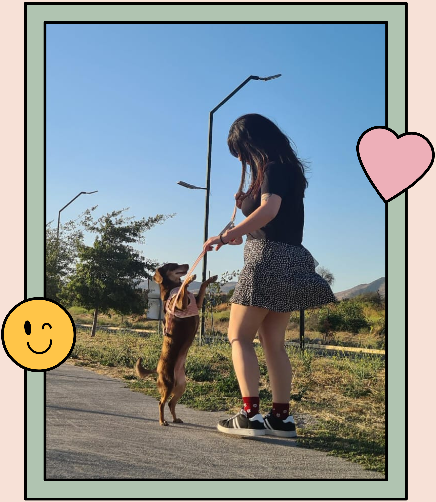

Sobre mí
Soy Daniela Jacob. Desde pequeña siento mucho amor y una conexión especial con los animales. Cuando se me presentó la oportunidad de trabajar en esto me sentí muy feliz y es algo que disfruto mucho hacer. Es una alegría recíproca cada vez que vuelvo a ver a sus pequeñitos.
Empecé a cuidar mascotas en el año 2020 y desde entonces he conocido muchos gatitos y perritos. Mis servicios están orientados principalmente a estos pero puedo cuidar a cualquier otro tipo de mascota con mucho amor.
Te invito a contactarme si necesitas que cuide a tu mascota en la comodidad de su propio hogar y a ver la galería de mascotas a las que ya he cuidado.